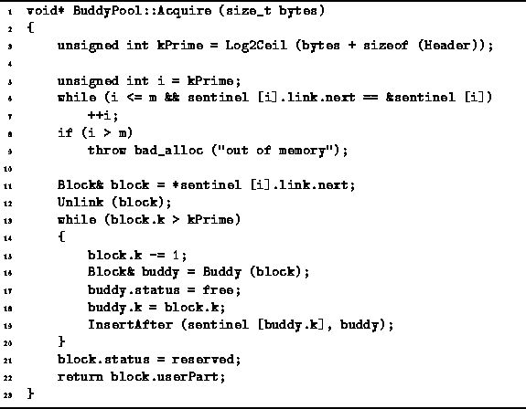
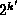
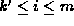
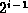
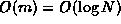

Data Structures and Algorithms
with Object-Oriented Design Patterns in C++
Data Structures and Algorithms
with Object-Oriented Design Patterns in C++
The Acquire member function of the BuddyPool class
is defined in Program  .
This function takes an integer-valued argument which specifies
the size of storage area required.
The function returns a pointer to the region of memory that is allocated.
.
This function takes an integer-valued argument which specifies
the size of storage area required.
The function returns a pointer to the region of memory that is allocated.

Program: BuddyPool Class Acquire Member Function Definition
The size of the area actually allocated by Acquire is  bytes where k' is given by
where bytes is the number of bytes of storage requested by the user. I.e., the area must be sufficiently large to hold both the user's data plus the Header used by the storage pool. Of course if k'>m, the request can never be satisfied.
The next step is to find the smallest free area the size of which is at least bytes. Specifically, we find the smallest value of i, , such that the free list for areas of size is not empty (lines 5-7). If all free lists for areas of size through are empty, the request cannot be satisfied and a badalloc exception is thrown (lines 8-9).
Having determined the value of i, we remove the first area from the free list of areas of size (lines 11-12). The private member function Unlink is called to remove the area from the doubly-linked free list. To remove a given element from a doubly-linked free list takes constant time.
If i=k', the area has the correct size and we are done. Otherwise, i>k' and the area is too large. If the area is too large, we can split it into two areas (buddies) of size . One of the buddies is retained while the other is inserted into the appropriate free list. After the split if i-1=k', the we are done. Otherwise, the area still to large and it can be split again (lines 13-20).
Eventually, the size of the area is exactly bytes. The area is marked reserved and a pointer to the userPart is returned (lines 21-22).
The running time of the Acquire function is O(i-k'+1). E.g., when we request of block of size and the free list for blocks of size is not empty, then i=k' and the running time is O(1). On the other hand, suppose that we request an area of size but all the free lists are empty except for one entry in the free list of areas of size . In this case i=m and k'=0. Therefore, the worst-case running time is , where N is the number of blocks in the storage pool.
 Copyright © 1997 by Bruno R. Preiss, P.Eng. All rights reserved.
Copyright © 1997 by Bruno R. Preiss, P.Eng. All rights reserved.